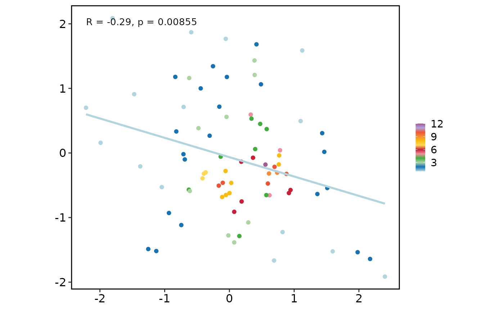
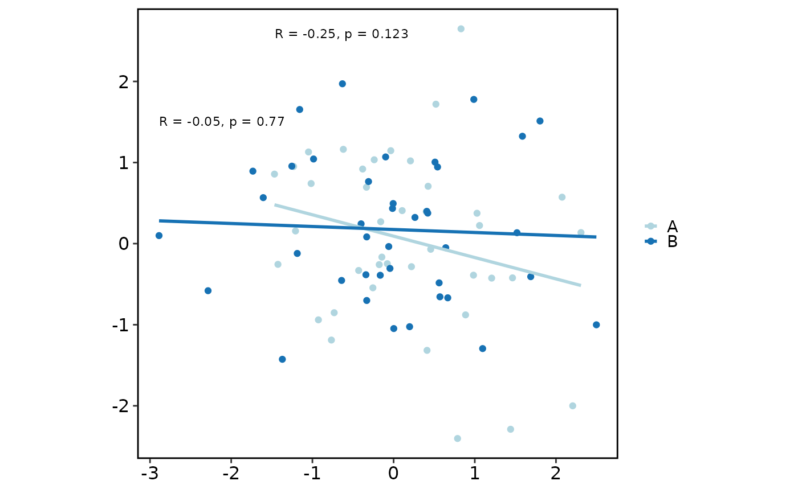

Plot two- or three-column data as a scatter plot with theme_this and
thisplot palettes. Optional smoothing, correlation annotation, point density,
and marginal plots are available.
Usage
plot_scatter(
data,
smoothing_method = c("lm", "loess"),
palette = "Chinese",
palcolor = NULL,
title = NULL,
xlab = NULL,
ylab = NULL,
legend.title = NULL,
legend.position = "right",
theme_use = "theme_this",
theme_args = list(),
margins = c("both", "x", "y"),
marginal_type = NULL,
margins_size = 10,
compute_correlation = TRUE,
compute_correlation_method = c("pearson", "spearman"),
keep_aspect_ratio = TRUE,
facet = FALSE,
se = FALSE,
pointdensity = TRUE
)Arguments
- data
A data frame with 2 columns (
x,y) or 3 columns (x,y, and a grouping column). Extra columns are ignored.- smoothing_method
Smoothing method passed to ggplot2::geom_smooth. Can be
"lm"or"loess".- palette
Palette name used for groups or point-density coloring. See show_palettes.
- palcolor
Custom colors used to create a color palette.
- title, xlab, ylab
Plot titles.
- legend.title
Legend title.
- legend.position
Legend position.
- theme_use
Theme function applied to the plot.
- theme_args
A named list of arguments passed to
theme_use.- margins, marginal_type, margins_size
Marginal plot controls used when
ggExtrais installed.marginal_typecan be"density","histogram","boxplot","violin", or"densigram".- compute_correlation
Whether to annotate Pearson or Spearman correlation.
- compute_correlation_method
Correlation method:
"pearson"or"spearman".- keep_aspect_ratio
Whether to use a 1:1 aspect ratio.
- facet
Whether to facet by the grouping column when
datahas 3 columns.- se
Whether to show smoothing uncertainty.
- pointdensity
Whether to color ungrouped points by local density when
ggpointdensityis installed.
Examples
set.seed(1)
plot_scatter(data.frame(x = rnorm(80), y = rnorm(80)))

plot_scatter(
data.frame(
x = rnorm(80),
y = rnorm(80),
cluster = rep(c("A", "B"), each = 40)
)
)
